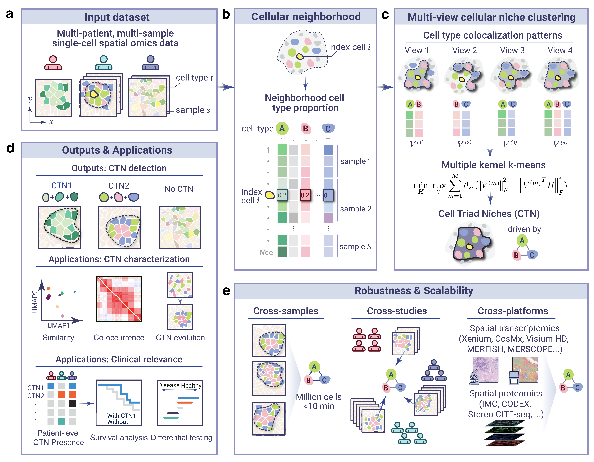

SCOPE (SystematiC prOfiling of disease-relevant sPatial nichEs) is a scalable multi-learning statistical framework that represents tissue architecture through Cell type-Triad Niches (CTNs), which are cohort-stable motifs of localized higher-order cell-type interactions. SCOPE integrates multiple spatial colocalization patterns within a multi-view learning framework to derive reusable niche vocabularies from spatially resolved single-cell data.

SCOPE schematic
Installation
Install SCOPE.CTN from GitHub:
install.packages("devtools")
devtools::install_github("YufanWu147/SCOPE.CTN")